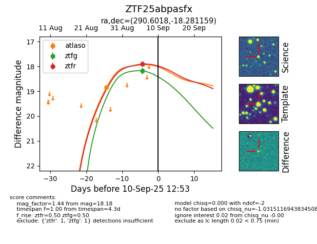

FINK: ZTF25abpasfx
Lasair: ZTF25abpasfx
ALeRCE: ZTF25abpasfx
ZTF25abpasfx (ztf,fink)
equatorial (ra, dec) = (290.6018,-18.28116)
galactic (l, b) = (19.7225,-14.88496)

last atlaso=18.85, ztfg=18.18, ztfr=17.91
1 atlaso, 1 ztfg, 1 ztfr detections